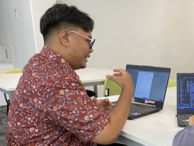
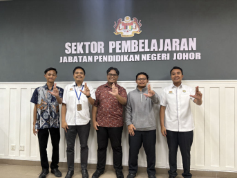
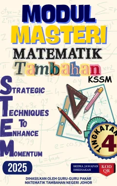

I build software that is useful, reliable and secure by design.
I'm Iqbal, a software engineer from Johor, Malaysia. I founded Team ChendAwan Ventures,
which delivers production systems for government and corporate clients, and I built VERITAS,
a live web vulnerability assessment platform, as my final-year project.
Systems in production, and the tools to test them.
Client platforms I've led, security tooling I've built, and coursework I'm proud of. Client work is marked private where screens and code can't be shared; ask me for a walkthrough of anything marked "demo on request".
Web vulnerability assessment platform · Final-year project · Solo
A multi-tenant workspace where customers prove they own a web application, run an active security assessment, and get findings backed by evidence, confidence levels and remediation guidance. Its rule: AI proposes, evidence validates, rules decide.
HR, attendance & payroll platform · HRSB Holdings Sdn Bhd · Lead developer & project manager
One Laravel platform with 15+ modules for a multi-company corporate group: staff records, biometric attendance, leave, claims, multi-level overtime approvals and a payroll engine that produces Malaysian statutory outputs (EPF, SOCSO, EIS, PCB, zakat).
Statewide STEM education platform · Johor State Education Department (JPNJ) · Lead architect & project manager
A centralised platform for STEM education programmes across Johor, designed for high-concurrency traffic and complex education datasets. I worked directly with government stakeholders, resolved ISP infrastructure bottlenecks to keep it available, and protected it with Cloudflare and SSL/TLS.
Crowdsourced road hazard reporting · Android app + web admin · Team of 4
Drivers report potholes, flooding and debris with photo and GPS, see hazards on a live map, and help confirm or resolve them. A hybrid risk score gives an instant on-device result, then a Cloud Function asks Gemini to review the report and photo in the background.
P-05Veritas PayloadsOWASP Top 10 payload dataset, companion to VERITASDemo on request
210,845 payloads in 65 vulnerability categories, across 139 files (~70 MB of JSON), covering all 10 OWASP Top 10 (2025) categories.
One schema for every entry: ID, category, target technology, injection point, payload, and validation rules (expected status code and success pattern).
Compiled and normalised from industry-standard testing wordlists, with an interactive static dashboard on GitHub Pages.
Python
JSON
JavaScript
GitHub Pages
P-06Projek DengkisModular CLI for authorised web security assessmentsDemo on request
Active testing only runs with an explicit authorisation flag, against systems the user has permission to assess.
Endpoint discovery, context-aware payload testing, business-logic checks and evidence-based verification of results.
HTML, JSON and Markdown reports, plus architecture notes and a Kali Linux workflow guide.
Python
Docker
Kali Linux
P-07SAJATECHNetwork topology & security simulator · Team project, ITT550Demo on request
Interactive vector diagram of a 32-device faculty network design.
Ping simulator that tests VLAN segmentation and guest-isolation rules across the topology.
AI Copilot that explains VLANs, ACLs, packet paths and each simulation result. The API key stays on the server, never in the browser.
Next.js
TypeScript
React
P-08DengkisExiftoolsTelegram bot for digital forensicsDemo on request
Extracts EXIF metadata with ExifTool, with optional Binwalk signature scans and Foremost file carving.
Returns a structured report plus the raw JSON.
Python
ExifTool
Binwalk
Foremost
Telegram Bot API
P-09PCS.MYE-commerce ordering platform · Projek Cuti Sem × Workshirt CollectionDemo on request
Product catalogue, pre-orders, checkout, promotions, admin panel, confirmation emails and PDF invoices.
ToyyibPay payment gateway with payment callbacks and gateway-fee handling.
P-10BudiMadaniFuel subsidy calculator for Malaysian drivers · AndroidDemo on request
Fetches current RON95, RON97, diesel and BUDI95 prices from the data.gov.my open data API, with offline fallbacks.
Calculates by litres or by budget, and compares pump price against subsidised price to show savings.
Google Sign-In through Firebase Authentication and Android Credential Manager; Material Design 3 light and dark themes.
Java 17
Android SDK
OkHttp
Firebase Auth
P-11NeuroQuizAdaptive learning quiz platform · Team project, PWADemo on request
RB-ADA adaptive difficulty algorithm, and a Cognitive Analyzer based on the Rule Space Method.
1,000+ questions in 5 categories, with points, levels, streaks, achievements and performance analytics.
Bilingual (English and Bahasa Malaysia), WCAG AA accessible, works offline, exports results to PDF.
JavaScript
PWA
Service Workers
jsPDF
P-12BQR.PROOffline-first QR code studio · PWADemo on request
Real-time preview for URLs, text, email, phone, WiFi, vCard, WhatsApp and location, with 8 templates.
Colours, gradients, module styles and logo overlay that automatically switches to the highest error-correction level.
PNG and SVG export; uploaded SVG logos are sanitised before use; deployed through CI.
JavaScript
Vite
Workbox
Canvas API
P-13EcoPulseIoT plant-monitoring dashboard for an ESP32 sensor nodeDemo on request
Receives live sensor data from an ESP32 over MQTT using secure WebSockets.
ESP32
MQTT
WebSockets
JavaScript
P-14One Is LyingMobile-first social deduction party gameDemo on request
For 3–10 players, with custom or auto-generated word pairs, camera-based player avatars and timers.
WCAG AA accessible.
JavaScript
HTML5
Camera API
P-15ZapZapBrowser-based internet speed testDemo on request
Measures ping, download and upload speeds in the browser.
JavaScript
LibreSpeed
02Experience
From first conversation to production, and support after handover.
Jan 2025 – Present
Founder & Lead Developer
Team ChendAwan Ventures · Johor, Malaysia · SSM 202603212164 (003878769-W)
A registered, student-led software business that designs, builds and delivers production web and mobile systems for government and corporate clients, including HRSB ONE and JohorSTEMHub.com.
Lead client engagements from requirements gathering and system design through development, deployment, handover and support.
Direct the technical team, set the architecture and review delivery for each project.
Manage client and stakeholder communication, timelines and scope.
Apply security from development through production: Cloudflare proxies, SSL/TLS, role-based access control and secure authentication.
Build internal tools that automate client workflows and reduce manual effort.
Oct 2024 – Feb 2025
ICT Intern
Johor State Education Department (JPNJ) · Johor Bahru, Malaysia
Built and deployed the Smart Office Staff Movement Tracker, replacing manual logging for department staff.
Digitised redundant manual workflows, improving data accuracy and reporting speed.
Maintained ICT infrastructure for the Learning Sector by diagnosing and resolving network and hardware faults.
Presented technical briefings and progress reports to senior management.
03Capabilities
What I can do, and where I've done it.
Every capability below points to a project, certification or competition you can check.
Security
Web application security (OWASP Top 10)
VERITAS, Veritas Payloads, Projek Dengkis
Vulnerability assessment
VERITAS scan engine and reporting
Authorised penetration testing
Projek Dengkis, CTF competitions, Kali Linux
Red team operations
CRTOM certification, CTF competitions
Threat intelligence
CTIGA certification
LLM security
CLLMSP, CLLMSE; keeping AI out of VERITAS's decision path
Best Contributor Award · Gerakan Mahasiswa Jauhar (GERMAJ)2025
CTF & programming competitions
National TAMiNG iCTF8 1st Runner-Up2026
OWASP KL CTF2026
Re:Hack CTF2026
NadiXMCMC CTF2026
IHack UiTM CTF2026
ProSolve Competitive Programming, UiTM2026
rAKSASA CTF2023
05About
Security is part of engineering, from the first design decision.
I started building software for real users early, and that shaped how I work. When a client depends on a system for payroll, attendance or a statewide portal, it has to stay available, protect people's data and do exactly what it promises.
Through Team ChendAwan Ventures, I take projects from first conversation to production: gathering requirements, designing the architecture, building the system, deploying it and supporting the client after handover. Along the way I've worked with Malaysian statutory payroll rules, biometric attendance devices, multi-level approval workflows, payment gateways and government stakeholders.
On the security side, I compete in capture-the-flag events, hold certifications in red team operations, threat intelligence and LLM security, and built VERITAS to understand application security from the inside: how inputs are reached, how findings are proven, and how results should be reported so developers can act on them.
I learn quickly, enjoy practical problems and like working closely with the people who will use what I build.

At work.

With the Learning Sector team during my JPNJ internship.Off the keyboard: I ride a CBR150R.
How I work
Understand the real requirement first
Payroll, attendance and approval rules are where systems usually go wrong, so I learn the business process before writing code.
Security is a design decision
Scope control, least privilege and auditability go into the architecture, not a later patch.
Evidence over assumptions
In VERITAS the rule is "AI proposes, evidence validates, rules decide." I apply the same thinking to any system that makes important decisions.
Degrade gracefully
Long-running jobs go to queues, external services can fail, and the system should keep working when they do.
Document and hand over properly
Clients should be able to run, maintain and understand what they've been given.
Education
BSc (Hons.) Computer Science, Netcentric ComputingUniversiti Teknologi MARA (UiTM), Melaka (Jasin) · CGPA 3.74 · Final-year project: VERITAS2025–2027
Diploma in Computer ScienceUniversiti Teknologi MARA (UiTM), Johor (Segamat) · CGPA 3.422022–2025
Grant HolderDuta Jauhar, Program Pemerkasaan Menara Gading2024
Student Leader CouncilUiTM Orientation Day2023
Audit CommitteeCampus Elections2023
ParticipantUniversity Leadership Engagement Institute Dato' Onn2023
Publications
Lead editor

Modul Masteri Matematik Tambahan Tingkatan 4 Negeri Johor
As lead editor, I was responsible for consistent content, accurate topics and quality of delivery. Published by the Johor State Education Department and used by schools across Johor.
As lead editor, I made sure Form 5 Mathematics topics were presented clearly and consistently. Published by the Johor State Education Department as a reference for students across the state.
Looking for an internship, part-time or contract role.
I want to build or secure real systems alongside experienced engineers, as a Security Software Engineer, Embedded Systems Engineer, Information Security Analyst, Cybersecurity Consultant or Solutions Architect. I'm based in Johor and open to on-site, hybrid or remote work, including the Klang Valley.